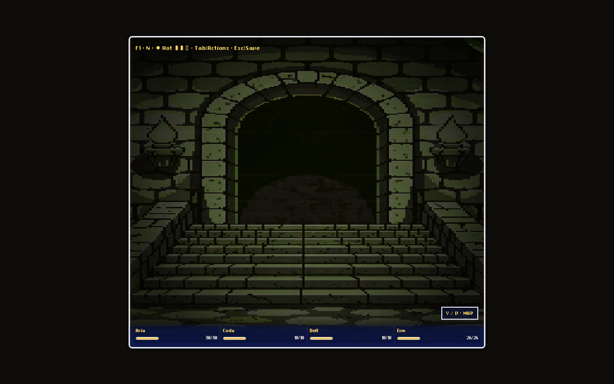
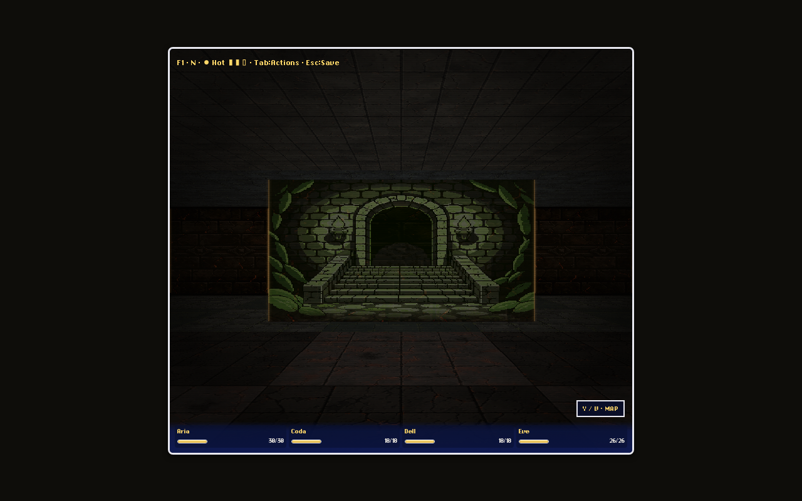
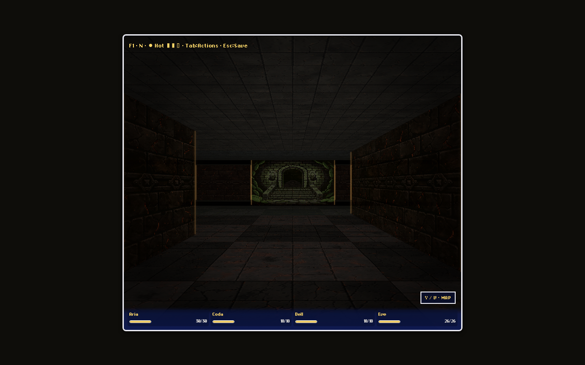
LoadedTileset.stairs slot (same substitution point as door.png).
Reads as a real descending stairwell at 1/2/4-tile approach; at distance it
glows as a strong landmark against the flanking ember-suture (f3) zone.
Polish pass: the bottom ~10% of the panel is now alpha-feathered
(scripts/feather-stairs.mjs) so the live floor-cast shows through at
the seam instead of a hard static edge — measurably better at 1-tile range.
At 2+ tiles it still reads partly as "a picture in a frame," but that's mostly
the pre-existing flanking ivy billboards, not this texture; not fully closed.
Minor known issue: a faint centerline seam appears only when the camera is
perfectly axis-aligned — a pre-existing raycaster tie-break, not unique to
this asset (documented, not fixed this pass).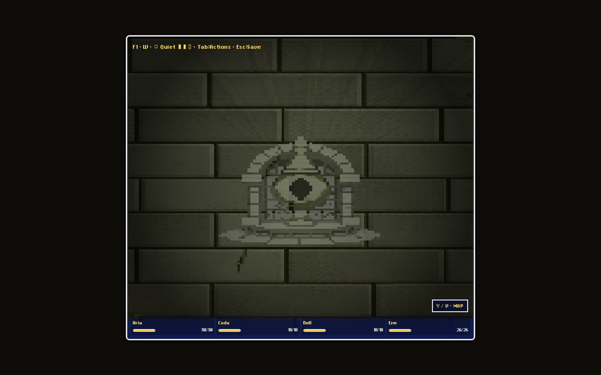
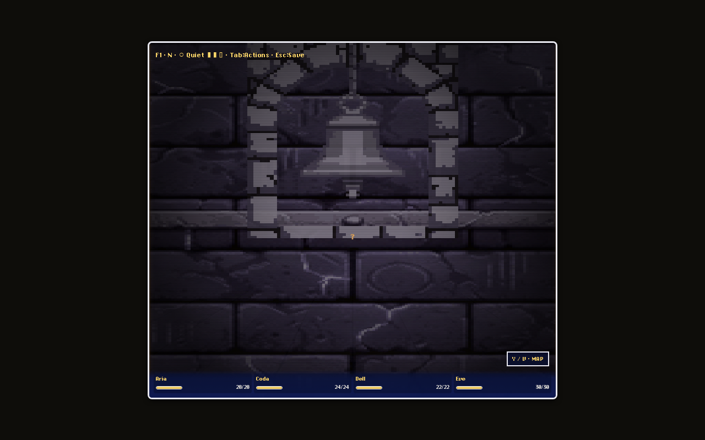
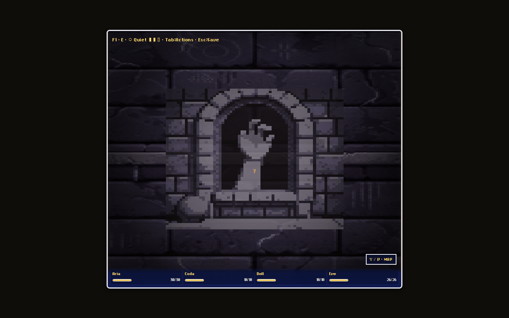
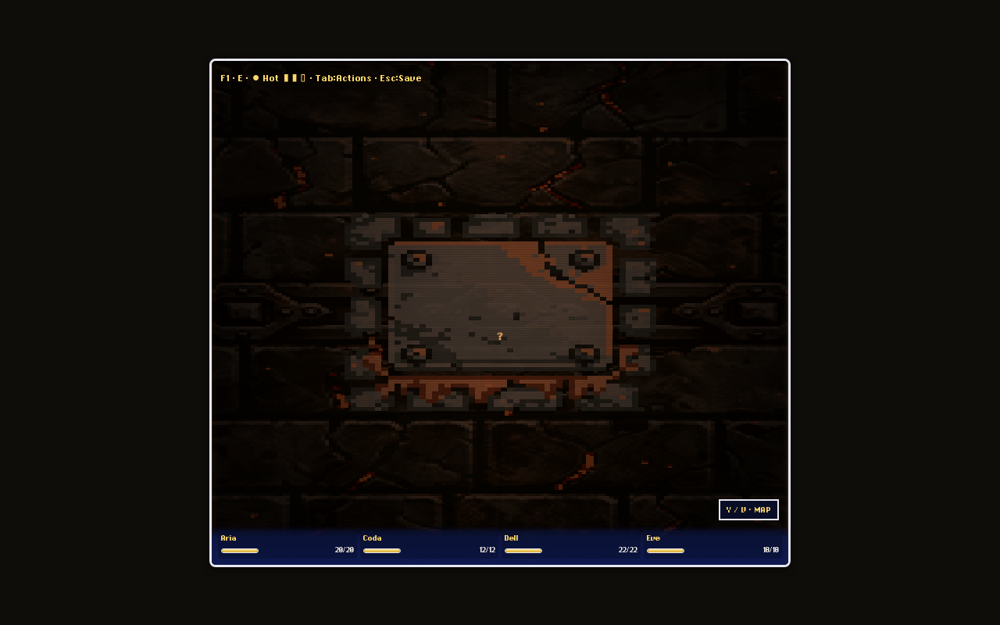
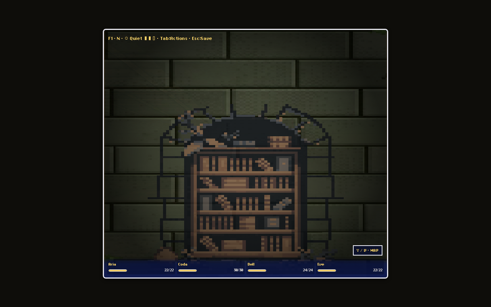
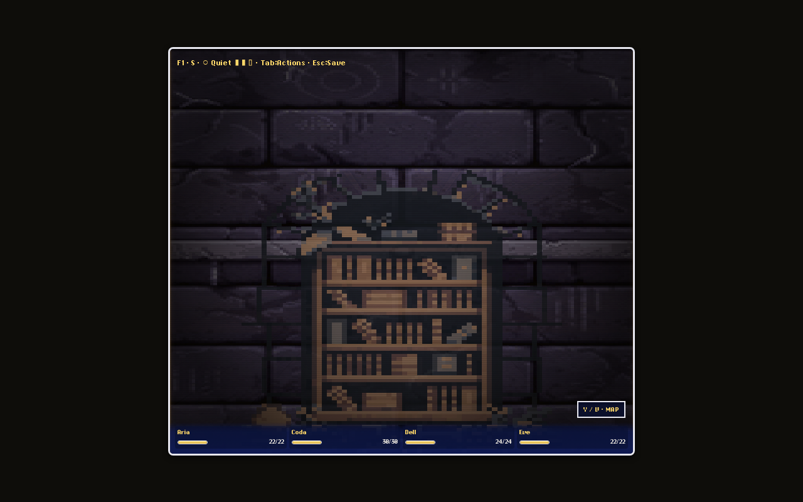
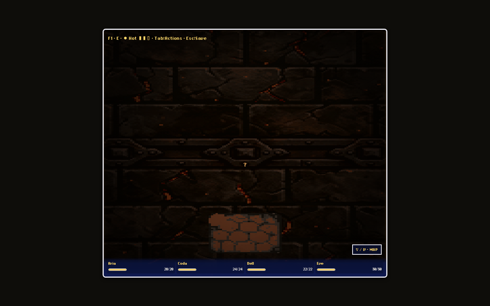
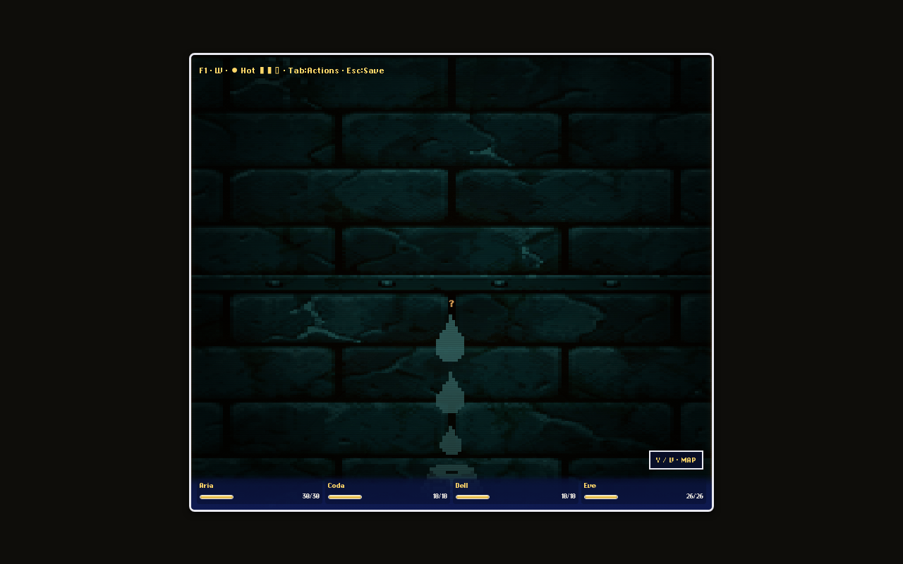